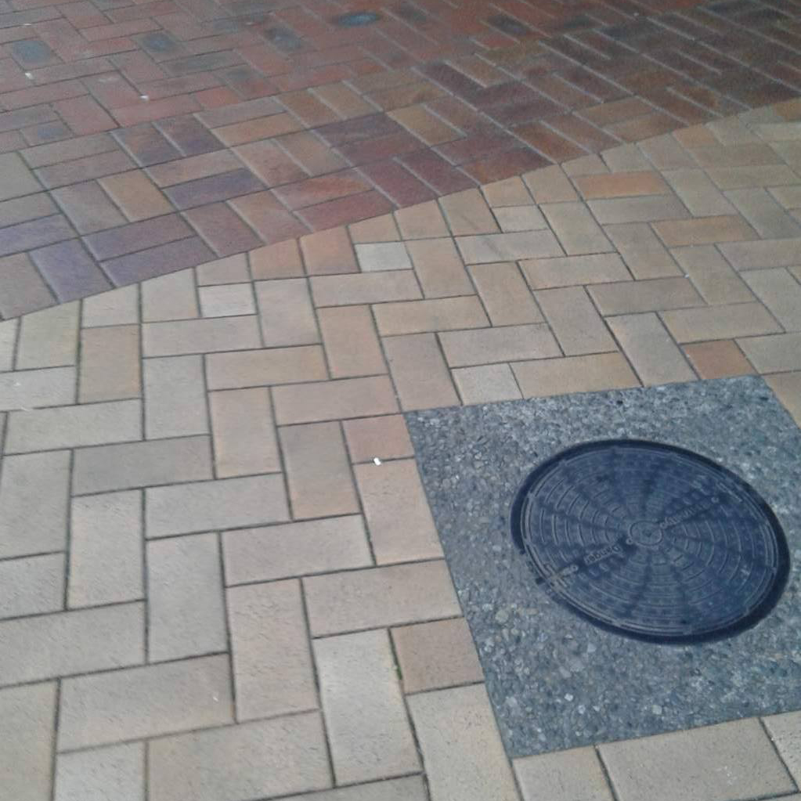
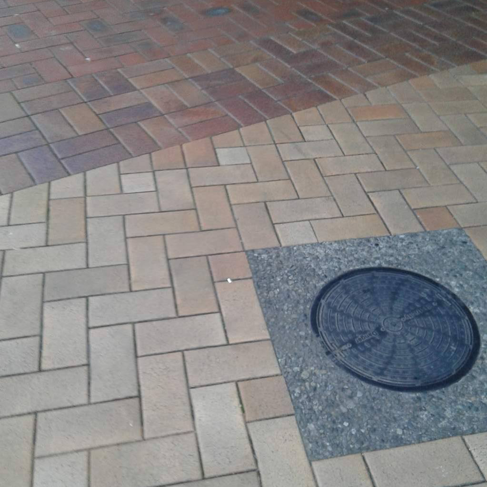

Classic Concrete
Standard footpaths outside of the CBD. You'll find theses pathways everywhere providing a smooth and gentle surface for skateboarders however can be filled with potholes or patches so watch out!
 

Zig-Zag Bricks
Common footpath in the middle of Wellington City. These paths can be great to
ride on or the loudest most annoying to ride on depending on the angle that you're
going.
If you're skating diagonally across it's quiet and very smooth however when you
skate along these bricks straight, the shaking is something incredible and the noise is
something atrocious.
Shipping Containers?
Due to plenty of work happening around Wellington, shippping containers are used to let pedestrians walk saftely around. These however are not the best to be skating on. Loud and also very dangerous as the metal can stop them wheels pronto and send you flying.
Parks
Wellington is full of parks and fun little grass areas to take a break from the rest of the concrete jungle. These are not really reccomended to skate along as you'll probably fall off but its always nice to take a break and walk for a bit!